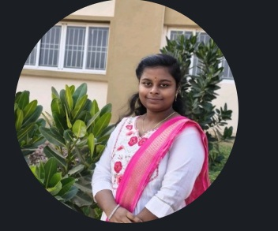

▣
Hotel Management System
A Java-based hotel management application supporting room details, bookings, food orders, and checkout calculations.
I build practical software solutions with Java and web technologies. I'm a B.Tech student focused on strengthening my development skills through hands-on projects and continuous learning.

BUILD · LEARN · IMPROVEI'm Guduri Yaswanth Tejasri, a B.Tech student in Cyber Security, IoT & Blockchain Technology (CIC) at Sasi Institute of Technology and Engineering. My current focus is Java development, problem-solving, and creating applications that make everyday tasks easier. I enjoy learning by building real projects and improving them step by step.
Tools and languages I'm using and learning as I grow as a developer.
A selection of academic and personal software projects.
A Java-based hotel management application supporting room details, bookings, food orders, and checkout calculations.
A console-based Java project with student registration, login flows, and file-based record management.
A project concept for digital appointment and queue management, designed around tokens, queue position, and service updates.
Cyber Security, IoT & Blockchain Technology · Third-year student
Interested in internships, collaboration, and opportunities to learn and contribute.